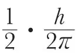
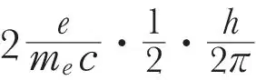
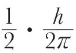
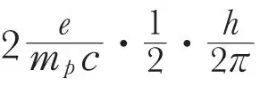

英文
英文伊曼纽尔·埃斯特曼等
编者按
保罗·狄拉克的电子理论预言：电子的自旋量子数为1/2，磁矩为1玻尔磁子。因为该理论似乎适用于所有自旋量子数为1/2的基本粒子，所以20世纪30年代早期的物理学家们认为质子也有类似的特征，它的磁矩大小与其质量成反比，是电子磁矩的1/1,840。但是，伊曼纽尔·埃斯特曼及其同事在这篇文章中报告了一个非常令人惊奇的结果：质子的磁矩大约是这一预计值的2.5倍。这一结果说明狄拉克的理论无法解释质子的一些重要特征，而且这也是证明核粒子（核子）具有内部结构的第一例实验证据。 英文
电子自旋角动量为

，它的磁矩为
，或者1玻尔磁子。质子的自旋角动量和电子具有相同的值
。由此，我们猜想质子磁矩为
=1/1,840玻尔磁子=1核磁子。 英文
据我们所知，目前能够确定这一磁矩的唯一有效方法就是氢分子束在非均匀磁场中偏转的实验（斯特恩–盖拉赫实验）。在氢分子中，两个电子的自旋是反平行的，所以互相抵消了。这样，分子磁矩就有两种来源：（1）分子作为一个整体的旋转，这等价于带电粒子的旋转，因此可以产生由环形电流引发的磁矩；（2）两个质子的磁矩。 英文
在仲氢分子中，两个质子的自旋是反平行的，因此它们的磁矩相互抵消，只有转动力矩存在。在低温下（液化空气温度），几乎所有的分子都处于转动量子态为0的状态，所以是非磁性的。这一点已经被实验所证实。在较高的温度下（例如室温），可以用玻尔兹曼定律算出有一定比例的分子处于更高的转动量子态上，以2态为主。因此，室温下仲氢分子的偏转实验可以用来确定其转动力矩，我们已经得到的转动力矩为每单位量子数0.8到0.9核磁子之间。 英文
在正氢中，可能存在的最低转动量子态是1态。因此，即便是在最低的温度下，由于两个质子的自旋平行，转动磁矩也会叠加。然而，因为转动力矩已经由纯仲氢的实验测得，所以质子的磁矩可以从正氢或者从含75%正氢和25%仲氢的普通氢的偏转实验中得到。结果是，正氢分子中两个质子的磁矩是5核磁子，也就是说，质子的磁矩是2.5（而不是1）核磁子。 英文
这是一个非常惊人的结果，但我们在后来的实验中提高了精度，并尝试了各种不同的条件（例如，不同温度，不同分子束宽度等），实验仍表明，这个结果的误差小于10%。 英文
我们将在《物理杂志》上发表有关这个实验的更多细节。 英文
（王静 翻译；赵见高 审稿）